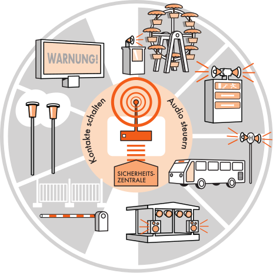

Modular. Kabellos. Autark.
Modular. Wireless. Self-Sufficient.
NIKOS ist ein modulares, kabelloses System zur Lösung unterschiedlicher Probleme auf Veranstaltungen, Baustellen und anderen mobilen oder temporären Einsätzen sowie in Krisenlagen. NIKOS funktioniert ohne Stromnetz, Mobilfunk, WLAN, Satelliten oder Internet. Es arbeitet vollständig autark und ist in wenigen Minuten einsatzbereit.
NIKOS is a modular, wireless system for solving different problems at events, construction sites and other mobile or temporary deployments as well as in crisis situations. NIKOS works without power grid, mobile network, WiFi, satellite or internet. It operates completely autonomously and is ready for use in a few minutes.
Die Bedienkonsole NIKOS [dispatcher]² ist ein vollwertiger Funkleitstellenarbeitsplatz. Von hier aus laufen Koordination über Funk, Hintergrundmusik, Service-Informationen, Werbeeinspielungen, Perimeterschutz, Besucherlenkung, Gerätesteuerung, Statusmonitoring und die Kopplung mit der Besucherzählung zusammen. Das Durchsagemodul NIKOS [audio]² fungiert als mobile Gegenstelle über verschlüsselten Digitalfunk (DMR) und setzt die Befehle vor Ort um. Über digitale Rufgruppen lassen sich einzelne, mehrere oder alle Einheiten gezielt und zeitgleich ansprechen. So begleitet NIKOS den Veranstaltungsalltag zuverlässig und unauffällig – und steht im Ernstfall sofort als Sicherheitsleitstelle bereit. Die Funktionen lassen sich durch Zubehör-Module weiter ausbauen, sodass den Möglichkeiten fast keine Grenzen gesetzt sind.
The control console NIKOS [dispatcher]² is a full-fledged radio control-room workstation. From here, coordination by radio, background music, service announcements, advertising spots, perimeter protection, crowd guidance, device control, status monitoring and integration with visitor counting all come together. The announcement module NIKOS [audio]² acts as the mobile counterpart via encrypted digital radio (DMR) and carries out the commands on site. Via digital call groups, single, multiple or all units can be addressed in a targeted and simultaneous way. This way NIKOS accompanies day-to-day event operations reliably and unobtrusively – and is instantly ready as a security control center when it matters. The functions can be extended further with accessory modules, so there are almost no limits to the possibilities.
Module ansehen → View modules →